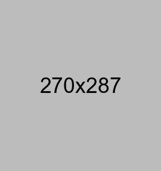
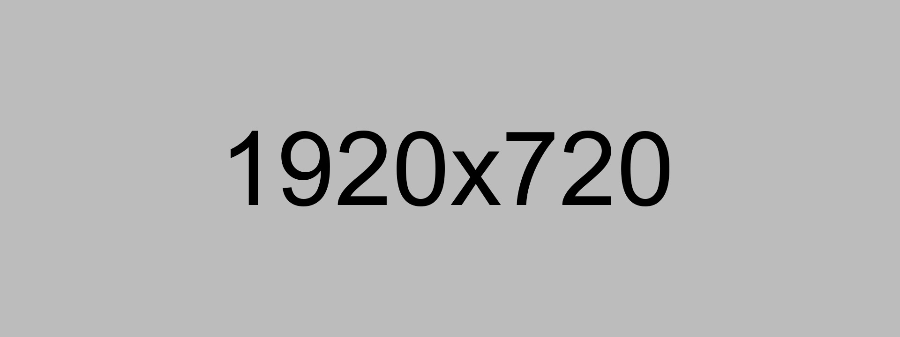
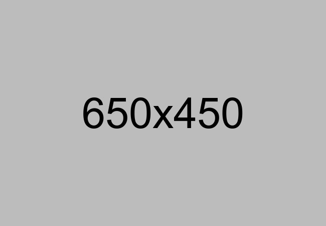
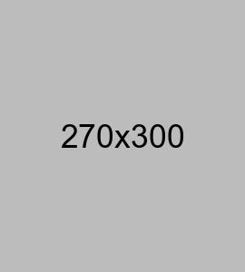

Impact 508 Green Tea
Fresh green tea, lemon, ginger, and a naturally bright finish.
Nourishment, community & good company
Thoughtfully made drinks and feel-good favorites, in a cozy neighborhood space where dogs are welcome too.
Always available
Reliable favorites for an everyday boost, a nourishing breakfast, or a delicious afternoon pause.
Fresh green tea, lemon, ginger, and a naturally bright finish.

Smooth espresso, oat milk, local honey, and cinnamon.

Mixed berries, protein-rich blend, banana, and oat milk.

This seasonLimited-time sips
Our seasonal menu follows the rhythm of the year, with comforting flavors, fresh produce, and something new to look forward to.
Back by popular demand
Rotating creations inspired by what our regulars ask for and what the neighborhood loves.
A creamy cocoa blend with banana and a wholesome protein finish.
A rotating fruit refresher selected with our community in mind.
An energizing tea cooler for easy mornings and neighborhood strolls.
Good times, shared
Little snapshots of the people, pups, and everyday moments that make Impact 508 feel like home.
Have a moment to share? Email us your photo and we can add it to the gallery.
Come as you are
Impact 508 Nutrition is designed to feel less like a stop and more like a familiar place. We pair nourishing choices with the warmth of a neighborhood cafe.
Dogs have a place here too. Bring your pup, settle in, and enjoy a calm community corner for two-legged and four-legged guests.
Meet us here

Visit Impact 508
Add your cafe address here
Monday-Sunday
8:00 AM-5:00 PM